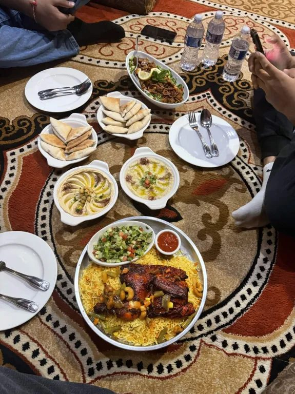

When our class was asked to pick a culture to explore through food, I kept coming back to Dubai and the wider Khaleeji region. It is a place that has changed faster than almost anywhere in the world. In less than a century, Dubai went from a small trading and pearl diving town on the Creek to a global city known for skyscrapers and luxury. What fascinated me was not the skyline, though. It was the question of how people hold on to their traditions through that kind of transformation. I believed food would be one of the clearest places to see that continuity, and I was right. A modern restaurant in Dubai can sit right next to a family kitchen still cooking dishes the way grandparents did before oil was discovered.
A Desert Table Built by the Sea
Long before Dubai became a financial hub, the Gulf was a crossroads of trade connecting Arabia with Persia, South Asia, and East Africa. Spices like cardamom, saffron, and turmeric arrived on those routes and became part of everyday cooking. As someone from India, I found it exciting to recognize spices from my own kitchen in Gulf food, carried there by the same trade winds centuries ago. What impressed me more was how a region with such a harsh desert climate built a whole food culture on a few reliable staples, dates, rice, fish, camel milk, and wheat, and turned them into dishes full of meaning.
A Cup of Coffee Full of Rules
The part of Khaleeji culture I was most curious about was hospitality. In Emirati culture, welcoming a guest is a serious responsibility, and food is at the center of it. Gahwa, the Arabic coffee flavored with cardamom and sometimes saffron, is served with dates to anyone who enters a home or majlis. There are even customs about how the cup is poured, held, and gently shaken to signal you are finished. I wanted to understand how something as simple as a cup of coffee can express respect, generosity, and identity. It reminded me right away of what we learned about Morocco in class, where serving tea to guests is a core part of showing respect. Two regions, two drinks, the same message.
Why Migration Made It Personal
Part of what pulled me toward this region was my own experience. When I moved to the US to study, food became one of the main ways I stayed connected to home and to my family. Dubai is a city built by migration, where the majority of residents come from other countries. I wanted to learn how Emirati identity stays strong in such a diverse place, and how the food of newcomers and the food of Emiratis shape each other.
Machboos as the Storyteller
If I had to tell the story of the Gulf through one dish, I would choose machboos, a spiced rice dish cooked with meat or fish, baharat spice blend, and loomi, which is dried black lime. Every ingredient points to history. The rice and spices reflect centuries of Indian Ocean trade, the fish version reflects the coastal life of fishermen and pearl divers, and the way it is served on one large shared platter reflects family and community. I would pair it with harees, a slow cooked dish of wheat and meat made for Ramadan, Eid, and weddings, and luqaimat, sweet fried dumplings drizzled with date syrup. Together they show how food marks everyday life, religious tradition, and celebration.
The Questions We Carried
As a group, we set out with a few big questions. How did pearl diving and trade shape what people ate? What did oil wealth and global migration change, and what stayed the same? Which dishes are shared across the Gulf, and which belong to the Emirates alone? How do families pass recipes from one generation to the next? And what values, like generosity, patience, and respect for guests, does Khaleeji food teach? This blog is our attempt to answer them. By following food through history, identity, family, migration, and memory, we hope to show Dubai not just as a modern skyline, but as a culture with deep roots that still lives at its dinner tables.
References
Abu Dhabi Department of Culture and Tourism. (n.d.). Gahwa (Arabic coffee). https://abudhabiculture.ae/en/Heritage-Carousel/Gahwa-Arabic-coffee
Remitly. (n.d.). Kuwaiti machboos: National dishes. https://www.remitly.com/blog/lifestyle-culture/kuwaiti-machboos-nationaldishes
The National. (n.d.). More than a meal: What the evolving story of Emirati cuisine says about society. https://www.thenationalnews.com/uae/heritage/more-than-a-meal-what-the-evolving-story-of-emirati-cuisine-says-about-society